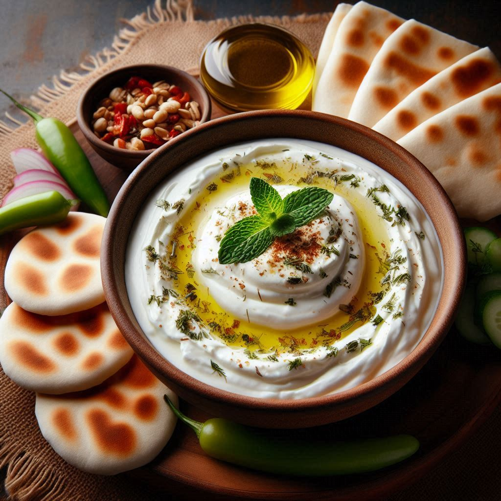
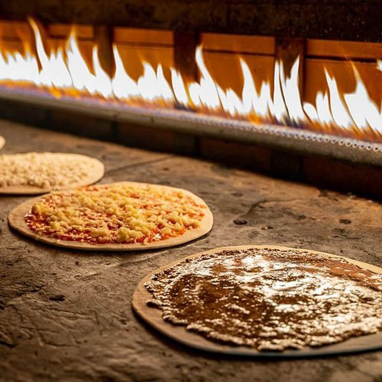
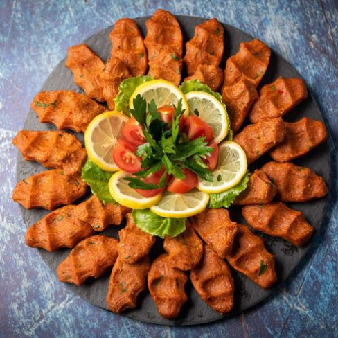
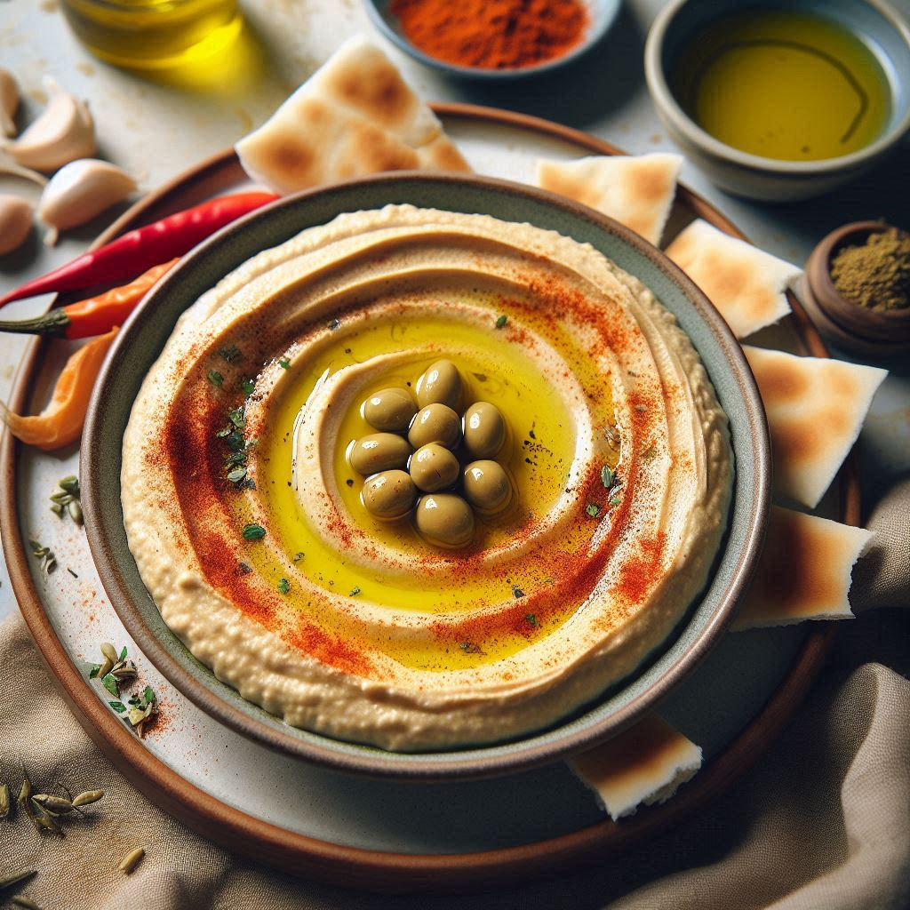
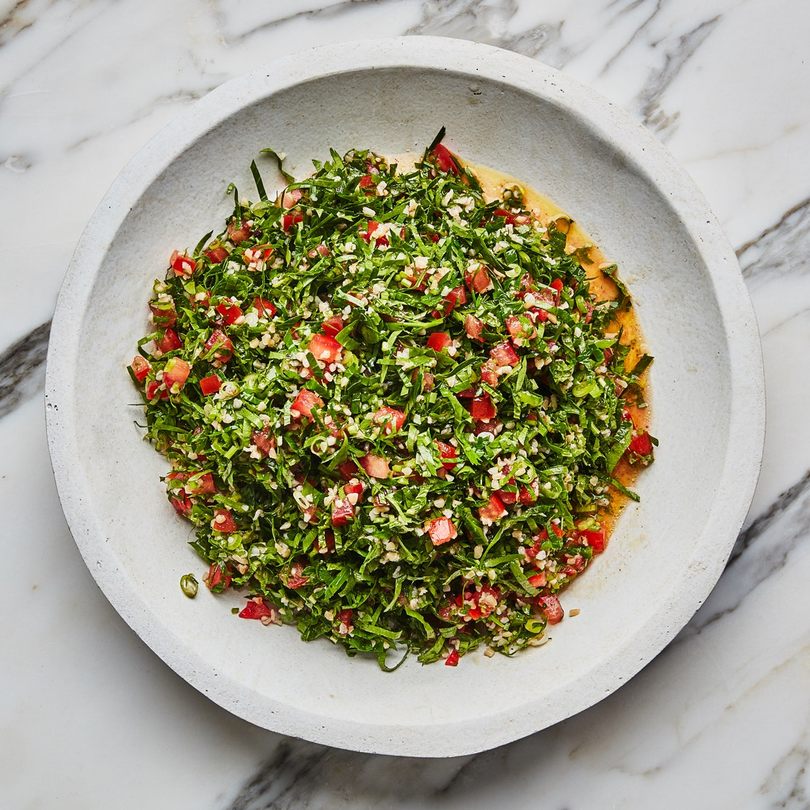
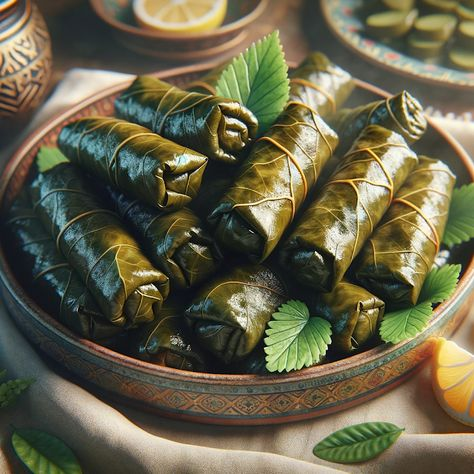
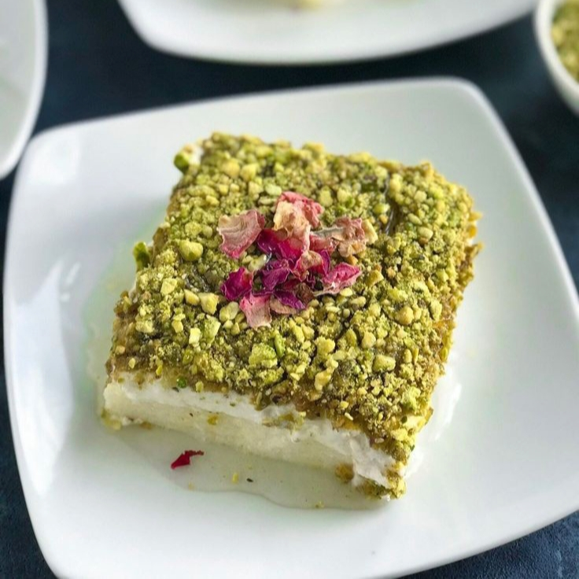
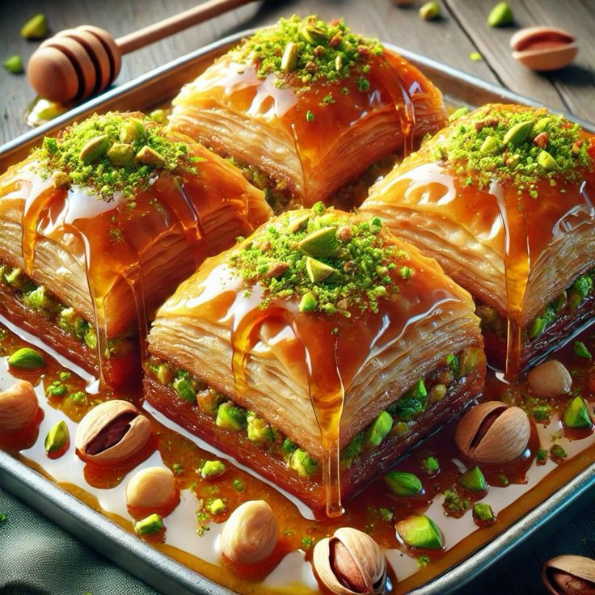
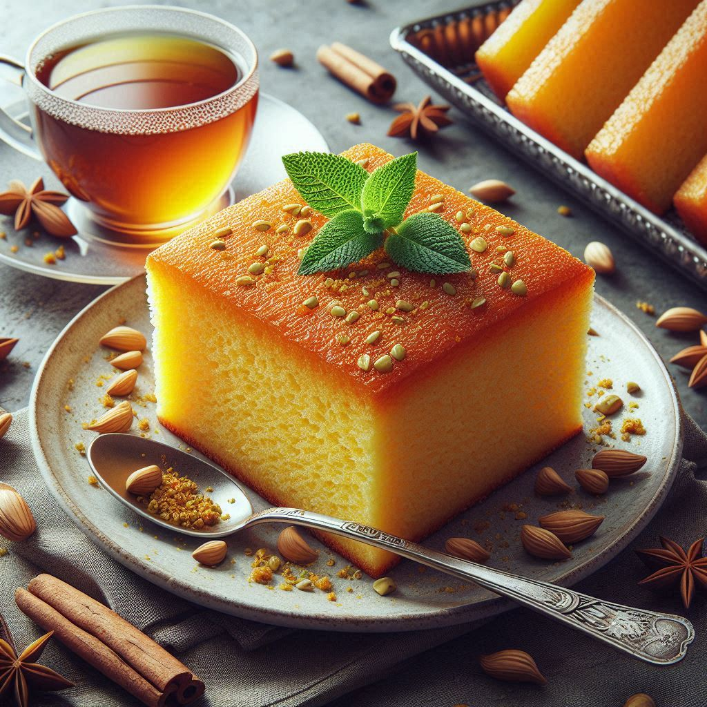

Best cuisine to try in Lebanon
Labneh
Labneh is a creamy, tangy yogurt cheese, perfect for spreading on warm bread and topped with a drizzle of olive oil and a sprinkle of za'atar. 🌿🍞🧀
Manakish
Manakish is a delicious Lebanese flatbread, traditionally topped with a blend of za'atar and olive oil, baked to crispy perfection. 🥖🌿
Kibbeh Nayeh
Kibbeh Nayeh is a traditional Lebanese delicacy made with finely ground raw lamb or beef, mixed with bulgur wheat, onions, and a blend of spices, creating a smooth, flavorful paste. 🍖🍅🍋
Hummus
Hummus is a creamy and delicious spread made from blended chickpeas, tahini, lemon juice, and garlic, often garnished with olive oil. 🍋🌿
Tabbouleh
Tabbouleh is a refreshing Lebanese salad, made with finely chopped parsley, tomatoes, mint, onions, and bulgur wheat, all dressed in a zesty lemon juice and olive oil mixture. 🌿🍅🍋
Warak enab
Warak Enab, also known as stuffed grape leaves, is a classic Lebanese dish filled with rice, herbs, and sometimes meat, offering a delicious and tangy flavor. 🍃🍋
Layali Lebanon
Layali Lebanon is a dreamy Lebanese dessert made from semolina pudding, topped with a luscious layer of whipped cream and a sprinkle of crushed pistachios. 🍮🌸
Baklava
Baklava is a sweet, flaky pastry made of layers of filo dough filled with chopped nuts and sweetened with syrup or honey. 🍯🌰
Sfouf
Sfouf is a fragrant Lebanese turmeric cake, known for its golden color and distinct flavor, often enjoyed with a cup of tea or coffee. 🍰🌿